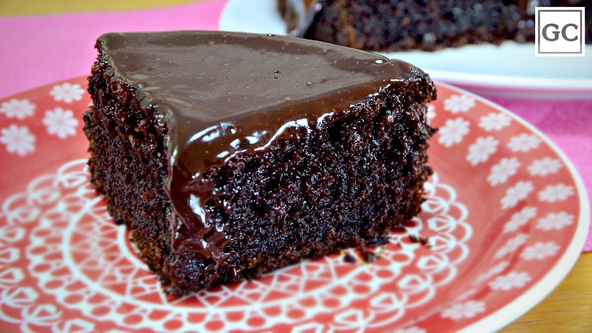

| MASSA |
4 ovos
2 colheres (sopa) de manteiga
2 xícaras (chá) de açúcar
1 xícara (chá) de leite
4 colheres (sopa) de chocolate em pó
xícaras (chá) de farinha de trigo
colheres (sopa) de fermento
| CALDA |
2 colheres (sopa) de manteiga
2 latas de creme de leite com soro
7 colheres (sopa) de chocolate em pó
3 colheres (sopa) de açúcar
| MODO DE PREPARO:40min |
1-Em um liquidificador adicione os ovos, o chocolate em pó, a manteiga, a farinha de trigo, o açúcar e o leite, depois bata por 5 minutos.
2-Adicione o fermento e misture com uma espátula delicadamente.
3-Em uma forma untada, despeje a massa e asse em forno médio (180 ºC) preaquecido por cerca de 40 minutos. Não se esqueça de usar uma forma alta para essa receita: como leva duas colheres de fermento, ela cresce bastante! Outra solução pode ser colocar apenas uma colher de fermento e manter a sua receita em uma forma pequena.
4-Acrescente o creme de leite e misture bem até obter uma consistência cremosa.
Em uma panela, aqueça a manteiga e misture o chocolate em pó até que esteja homogêneo.
Desligue o fogo e acrescente o açúcar
 Voltar Receitas